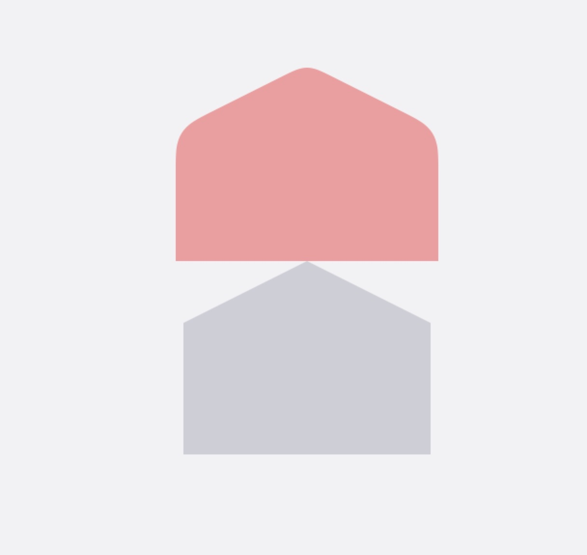
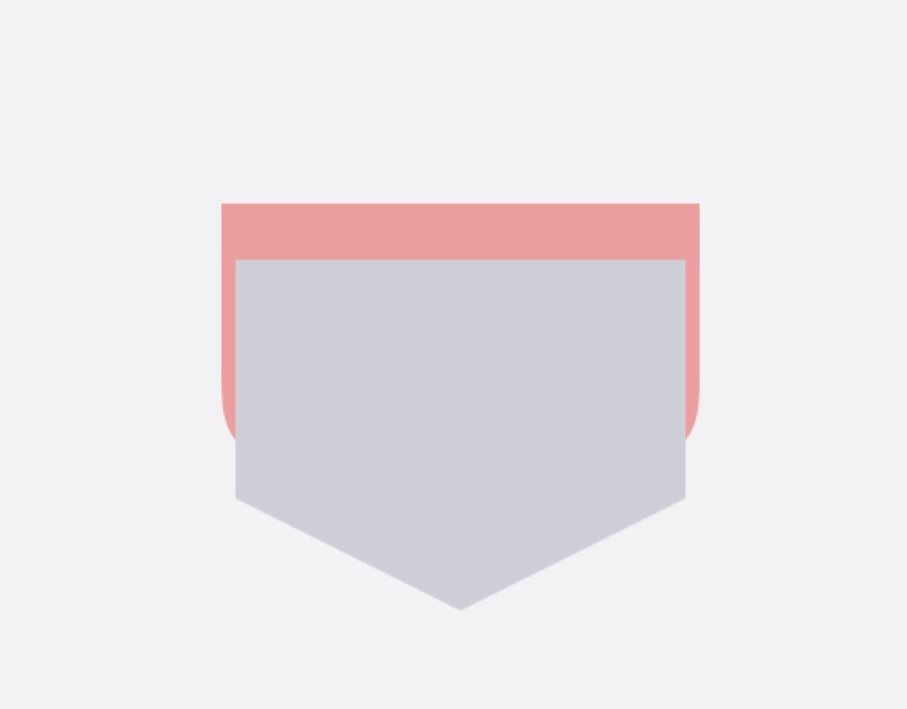
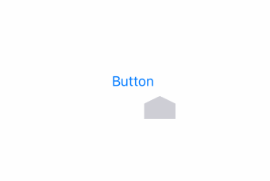
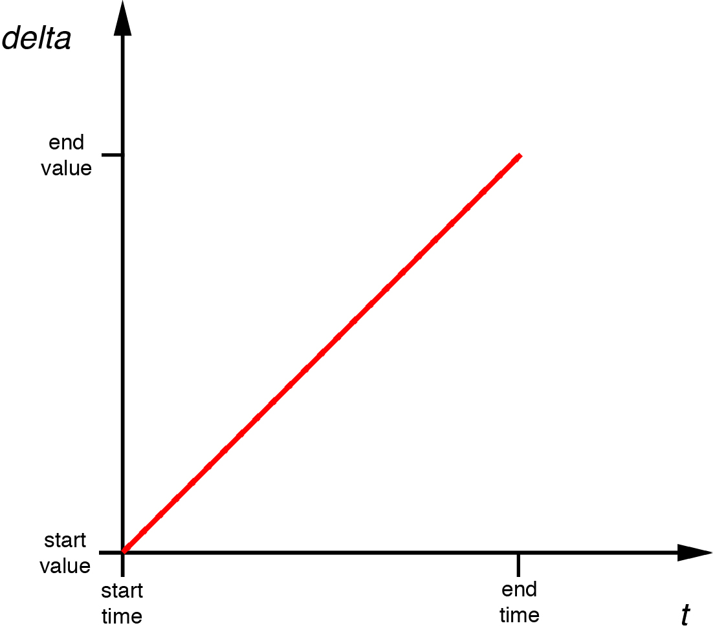
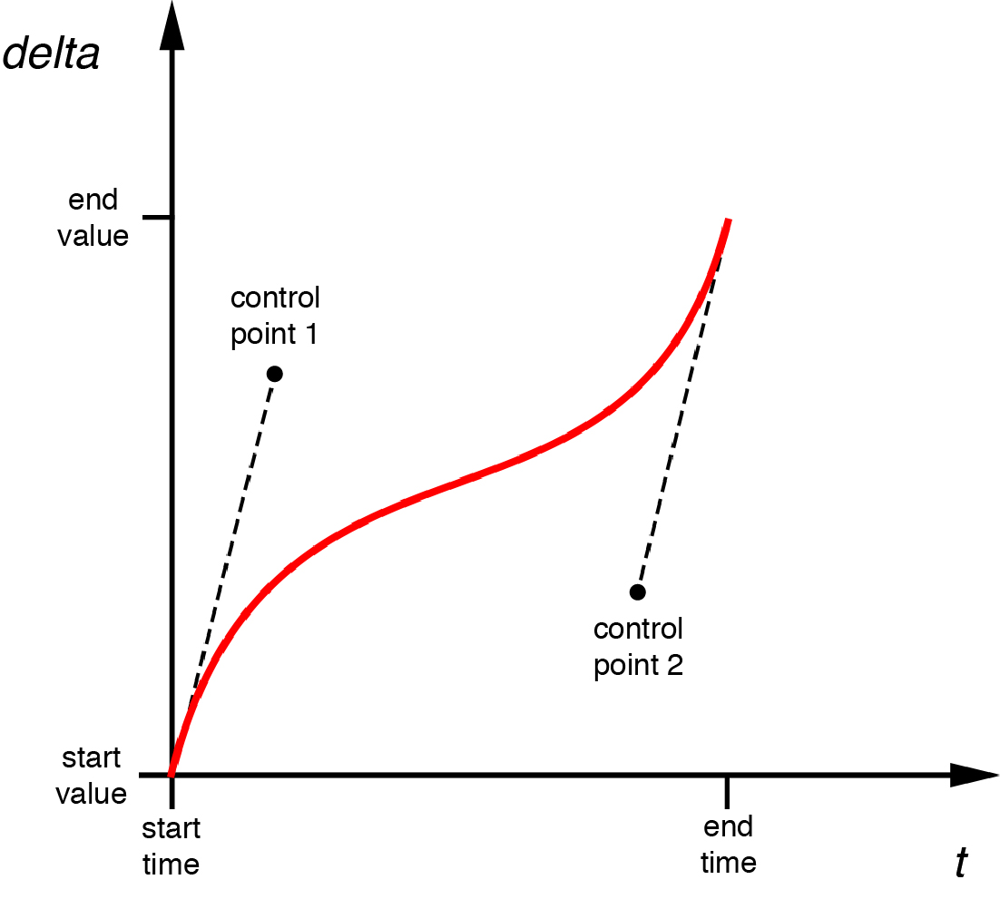
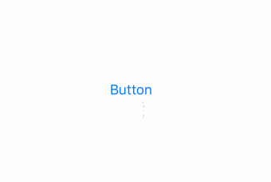

沙漏动画
最近有个新的需求，要做一个沙漏动画。说实话当我看到设计师给我的效果时候，确确实实难到我了。我以前很少做动画相关的东西，接触的也都比较简单。但是我还是比较高兴的，因为我非常喜欢这种免费的学习的机会，每天都做一些会做的东西就很没劲。废话不多说，开始吧。
先看下效果
我刚看到的时候，其实是无从下手的，根本不知道从哪里开始，后来一个朋友和我说，你应该把它分解开，一起看肯定很麻烦，比如先实现沙漏里上半部分沙堆的动画，在实现下半部分，在实现沙子的，最后做旋转。一点点来。这么说完，我觉得还是比较好的，把难得问题分解成一个个小问题，逐个解决，而且这也可以保证每个小模块之间相互不影响，你一个问题设计的不好，不会牵连其他的，后期优化也方便，最后的动画是由这些动画组合上的。那开始吧~
沙堆下半部分动画
由于上下部分其实是一个动画，所以只要实现了一个，另一个也就完成了。

假设粉色部分是沙漏的底部，灰色的是沙堆，那这个动画应该是灰色layer从粉色layer的底部移动到上部的过程，因为我们这个是不规则的图形，所以必须使用layer画出一个不规则的layer。其实我一开始的想法很简单，就是用两张图片，做位移，但实际的效果是：

向上的动画还好说，向下的话，沙堆下降的时候超出去的部分会展示出来，相信说到这大家也就明白了，这个不多解释了。至于背景色填充，遮罩这种的方案，就更不符合需求了，一个沙漏肯定是透明的，你加上底色，如果你这个页面的底色和你的这个底层一样还好，要不一样，那多难看。
所以一定要用layer来做。
class SandBoxBottomLayer: CALayer {
let sublayer1 = CAShapeLayer()
init(frame : CGRect) {
super.init()
self.frame = frame
self.configUI()
}
required init?(coder aDecoder: NSCoder) {
fatalError("init(coder:) has not been implemented")
}
private func configUI() {
let path = UIBezierPath()
path.move(to: CGPoint(x: self.frame.width/2, y: 0))
path.addLine(to: CGPoint(x: self.frame.width, y: self.frame.height*1/3))
path.addLine(to: CGPoint(x: self.frame.width, y: self.frame.width))
path.addLine(to: CGPoint(x: 0, y: self.frame.height))
path.addLine(to: CGPoint(x: 0, y: self.frame.height*1/3))
path.addLine(to: CGPoint(x: self.frame.width/2, y: 0))
path.close()
let sublayer = CAShapeLayer()
sublayer.masksToBounds = true
sublayer.frame = CGRect(x: 0, y: 0, width: self.frame.width, height: self.frame.height)
sublayer.path = path.cgPath
//我觉得加背景色反而不是很好看呢
// self.backgroundColor = UIColor(red: 232/255.0, green: 159/255.0, blue: 159/255.0, alpha: 1).cgColor
self.mask = sublayer
sublayer1.frame = CGRect(x: 0, y: self.frame.height, width: self.frame.width, height: self.frame.height)
sublayer1.path = path.cgPath
sublayer1.fillColor = UIColor(red: 206/255.0, green: 206/255.0, blue: 213/255.0, alpha: 1).cgColor
self.addSublayer(sublayer1)
}
}
这里用到了一个比较重要的属性就是CALayer的mask，mask其实也是一个CALayer，它就是整个Layer的可视部分，所以大家应该知道为什么View做圆角的时候需要开启masktobounds了。CAShapeLayer是CALayer的子类，它可以填充颜色，还有path这个属性，可以用贝塞尔曲线画出一个图形，创建一个CAShapeLayer然后设置它的path等于我们画好的沙堆的图形，最后在让CALayer的mask=CASHaperLayer，这样超出的部分就不会看到了。一个透明的不规则的CALayer就👌了。然后在用刚才的path同样的方式做一个沙堆layer，放在父layer的底部。
下面就是动画了。
func startAnimation() {
sublayer1.removeAllAnimations()
let animation = CAKeyframeAnimation(keyPath: "position")
animation.keyTimes = [NSNumber(value: 0.0),NSNumber(value: SandClockView.animationTimeWithOutRotate/SandClockView.animationTime),NSNumber(value: 1.0)]
animation.values = [CGPoint(x: self.frame.width/2, y: self.frame.height*1.5),CGPoint(x: self.frame.width/2, y: self.frame.height/2),CGPoint(x: self.frame.width/2, y: self.frame.height/2)]
animation.duration = SandClockView.animationTime
animation.isRemovedOnCompletion = true
animation.repeatCount = MAXFLOAT
animation.timingFunctions = [CAMediaTimingFunction(controlPoints: 0.8, 0, 1, 1)]
animation.fillMode = kCAFillModeForwards
sublayer1.add(animation, forKey: "")
}
跑起来的效果是

这里就是一个关键帧动画，说白了就是一个分时间段控制动画进程的类，之所以用它是因为我们要和其他动画串联起来，从沙漏开始到全部漏完，然后沙漏旋转，这是一个完整的动画。时间是6.5秒，其中6秒是沙漏的动画，0.5秒是旋转的。所以大家看我的keytime和values的设置就明白什么意思了，在0-沙漏动画部分就把位移做完，剩下的时间位移不变。timingFunctions这个属性可以提供一个贝塞尔曲线控制动画的随着时间完成的速度，系统有几个预设好的 ，easeinout这种的。不过我们的设计师觉得那种效果不太满意，我就自己写了一个。简单说下这个属性。

CAMediaTimingFunction这个类的初始化方法是传两个点。没有这两个点的时候，动画是线性的，斜率固定。但是当我们加入两个控制点的时候。

斜率就发生变化了，根据斜率来开，动画的速度是先快后慢，在快的过程。
我传的两个点是（0.8，0），（1，1）了，所以这个贝尔赛曲线的斜率一定是刚开始很慢，后来飙升这么一个过程。那动画也会这样，一开始不动，后来越来越快。我觉得设计师这么做很合理，这事一个loading图，先快后面的体验是很好的，相信大家都体验过加载网页时候那个loading条线快后慢的感觉吧。
这个说完了那上部分的也一样就说完了。
沙子动画
沙粒的动画在设计师给我的设计稿中已经给出了沙粒的个数，每个沙粒的开始下落的坐标和速度，所以这个相对好做。我把代码贴出来看下就好。
class SandLayer: CALayer {
//第一组沙粒
let sand05Layer = CALayer()
let sand05Layer1 = CALayer()
//第二组沙粒
let sand03Layer = CALayer()
let sand03Layer1 = CALayer()
//第三组沙粒
let sand01Layer = CALayer()
let sand01Layer1 = CALayer()
init(frame: CGRect) {
super.init()
self.frame = frame
self.configUI()
}
required init?(coder aDecoder: NSCoder) {
fatalError("init(coder:) has not been implemented")
}
private func configUI() {
sand05Layer.frame = CGRect(x: 0, y: -3, width: 1, height: 1)
sand05Layer.backgroundColor = UIColor(red: 206/255.0, green: 206/255.0, blue: 213/255.0, alpha: 1).cgColor
self.addSublayer(sand05Layer)
sand05Layer1.frame = CGRect(x: 1, y: -10, width: 1, height: 2)
sand05Layer1.backgroundColor = UIColor(red: 206/255.0, green: 206/255.0, blue: 213/255.0, alpha: 1).cgColor
self.addSublayer(sand05Layer1)
sand03Layer.frame = CGRect(x: 0, y: -10, width: 1, height: 2)
sand03Layer.backgroundColor = UIColor(red: 206/255.0, green: 206/255.0, blue: 213/255.0, alpha: 1).cgColor
self.addSublayer(sand03Layer)
sand03Layer1.frame = CGRect(x: 1, y: -3, width: 1, height: 1)
sand03Layer1.backgroundColor = UIColor(red: 206/255.0, green: 206/255.0, blue: 213/255.0, alpha: 1).cgColor
self.addSublayer(sand03Layer1)
//
sand01Layer.frame = CGRect(x: 0, y: -3, width: 1, height: 1)
sand01Layer.backgroundColor = UIColor(red: 206/255.0, green: 206/255.0, blue: 213/255.0, alpha: 1).cgColor
self.addSublayer(sand01Layer)
sand01Layer1.frame = CGRect(x: 1, y: -10, width: 1, height: 2)
sand01Layer1.backgroundColor = UIColor(red: 206/255.0, green: 206/255.0, blue: 213/255.0, alpha: 1).cgColor
self.addSublayer(sand01Layer1)
}
func startAnimation() {
self.addAnimation(withDuration: SandClockView.sandAnimationTime05, layer: sand05Layer)
self.addAnimation(withDuration: SandClockView.sandAnimationTime05, layer: sand05Layer1)
self.addAnimation(withDuration: SandClockView.sandAnimationTime03, layer: sand03Layer)
self.addAnimation(withDuration: SandClockView.sandAnimationTime03, layer: sand03Layer1)
self.addAnimation(withDuration: SandClockView.sandAnimationTime01, layer: sand01Layer)
self.addAnimation(withDuration: SandClockView.sandAnimationTime01, layer: sand01Layer1)
}
private func addAnimation(withDuration duration: CFTimeInterval,layer: CALayer){
layer.removeAllAnimations()
let animation = CABasicAnimation(keyPath: "position")
animation.fromValue = layer.position
animation.toValue = CGPoint(x: layer.position.x, y: self.frame.height)
animation.duration = duration
animation.isRemovedOnCompletion = true
animation.repeatCount = MAXFLOAT
animation.valueFunction = CAValueFunction(name: kCAMediaTimingFunctionLinear)
animation.fillMode = kCAFillModeForwards
layer.add(animation, forKey: nil)
}
}
6个沙粒的位移动画而已。

组合+旋转动画
class SandClockView: UIView {
static let animationTime = 6.5 //沙漏滴完+旋转的时间
static let animationTimeWithOutRotate = 6.1 //沙漏滴完的时间
static let sandAnimationTime05 = 0.5 //沙子下坠时间 共3中
static let sandAnimationTime03 = 0.3
static let sandAnimationTime01 = 0.1
let boxWidth: CGFloat = 34
let boxHeight: CGFloat = 25
lazy var topLayer: SandBoxTopLayer = {
let layer = SandBoxTopLayer(frame: CGRect(x: 7, y: 3, width: boxWidth , height: boxHeight))
return layer
}()
lazy var bottomLayer: SandBoxBottomLayer = {
let layer = SandBoxBottomLayer(frame: CGRect(x: 7, y: self.frame.height/2-1, width: boxWidth, height: boxHeight))
return layer
}()
lazy var sandLayer: SandLayer = {
let layer = SandLayer(frame: CGRect(x: self.frame.width/2-1, y: self.frame.height/2, width: 2, height: 25))
return layer
}()
override init(frame: CGRect) {
super.init(frame: frame)
self.configUI()
}
required init?(coder aDecoder: NSCoder) {
fatalError("init(coder:) has not been implemented")
}
private func configUI() {
self.layer.addSublayer(bottomLayer)
self.layer.addSublayer(sandLayer)
self.layer.addSublayer(topLayer)
let imageView = UIImageView(image: UIImage(named: "sandclock_bg"))
imageView.frame = self.bounds
self.addSubview(imageView)
}
}
在一个View上把这些动画组合上,在加上一个沙漏的背景框，就可以开始动画了，如果你不喜欢用UIImageView的话这个沙漏自己用贝塞尔曲线画出来也不难。
func startAnimation(){
topLayer.startAnimation()
bottomLayer.startAnimation()
sandLayer.startAnimation()
self.layer.removeAllAnimations()
let animation = CAKeyframeAnimation(keyPath: "transform.rotation.z")
animation.keyTimes = [NSNumber(value: 0.0),NSNumber(value: SandClockView.animationTimeWithOutRotate/SandClockView.animationTime),NSNumber(value:0.97),NSNumber(value: 1.0)]
animation.values = [0,0,Double.pi+0.07,Double.pi]
animation.duration = SandClockView.animationTime
animation.isRemovedOnCompletion = true
animation.repeatCount = MAXFLOAT
animation.timingFunctions = [CAMediaTimingFunction(name: kCAMediaTimingFunctionEaseOut),
CAMediaTimingFunction(name: kCAMediaTimingFunctionEaseOut),
CAMediaTimingFunction(name: kCAMediaTimingFunctionEaseOut),
CAMediaTimingFunction(name: kCAMediaTimingFunctionEaseIn)]
animation.fillMode = kCAFillModeForwards
self.layer.add(animation, forKey: "")
}
开始动画中调用所有组件化的动画开始，并且加上当前View旋转动画。同样时间要配合上。
我这个旋转动画本来享用springanimation来做，但是没找到自身旋转的API，所以只能先用这种方式来实现了。不过效果也还不错，gif可能看着有点卡，实际的效果好很多。每个动画但看起来都很简单，很也很难看，但是组合起来，效果就很不错了。
这是最终的效果。对比了一下和设计师给我的效果可以达到95%相似，有些地方的曲线，加速度，时间，他是直接用的fackbook的那套的准则的，给不出我具体的数值，所以还是有些偏差。不过他觉得已经可以接受了。但是达到100%才是我们程序员应该努力的方向。
总结
这次算是对以前用的动画的一次复习，基本把很多动画都用了一遍。从无从下手到完成其实也就是一天半的时间。所以这种把大问题拆分成小问题，追个解决的思想还是很好用的。
最后 源码地址 https://github.com/RookieNeo/NeoSandClock
支持Pod
参考资料：
iOS核心动画